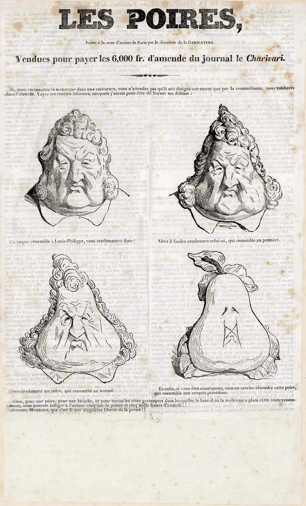

Cidadania, módulo 1, sessão 04
Posso dizer tudo?
Versão para imprimir: o material, os 14 exercícios e o papel do fim. Fazes tudo sozinho, só com uma caneta.
Parte 1, ver antes de concluir
Abre: Posso dizer tudo?
Caso inventado.
A conta anónima de memes da escola publica um desenho do diretor com cara de pera, por causa das regras novas do bar. Num comentário, alguém escreve: «E o Diogo, do 10.º B, rouba na cantina.» Em dois dias, o comentário corre a escola. O Diogo diz que é mentira. Ninguém diz que viu.
Onde acaba a crítica e começa o ataque?
Decide
A conta de memes deve ser apagada?
☐ Sim ☐ Não ☐ Depende
Escreve, numa linha, a razão que pesa mais para ti.
Exercício 1: Sombras na parede
Na alegoria da caverna, de Platão, os prisioneiros passam a vida a olhar para sombras numa parede. Porque as tomam pela realidade?
- Alguém os convenceu de que as sombras eram reais.
- Nunca viram as coisas que fazem as sombras.
- As sombras são mais nítidas do que as coisas.
Resposta: ______
Exercício 2: Um sim para um uso
Caso inventado: a Inês deixa o Tiago mostrar à turma uma caricatura dela, bem reconhecível. Com esse sim, ele pode publicá-la também na conta de memes.
☐ Verdadeiro ☐ Falso
Olha: Um rei que se torna pera
Antes de olhar Vê se há um desenho em que o rosto deixa de ser o do rei.

Les Poires, gravura em madeira publicada em Le Charivari, 17 de janeiro de 1834. Desenho talvez de Honoré Daumier, a partir de uma litografia de Charles Philipon (La Caricature, 1831); gravador desconhecido. Gallica, Biblioteca Nacional de França, bpt6k3058046f, f. 3. Registo de origem. Domínio público.
.jpg){kind=link}
Exercício 3: O que resta do rosto
Na pera do último desenho, ainda se veem marcas do rosto dos desenhos anteriores.
☐ Verdadeiro ☐ Falso
Exercício 4: Onde passa a linha
Onde deixa o rosto de ser o do rei?
- No último, porque aí já não há rosto, só uma pera.
- No terceiro, porque aí a cara já tem forma de pera.
- Não dá para apontar um: cada um parece-se com o anterior.
Resposta: ______
Lê: Antes e depois de publicar
Antes de ler Procura o que vem antes de publicar e o que vem depois.
N.º 1«Todos têm o direito de exprimir e divulgar livremente o seu pensamento pela palavra, pela imagem […]»
N.º 2«O exercício destes direitos não pode ser impedido ou limitado por qualquer tipo ou forma de censura.»
N.º 3«As infracções cometidas no exercício destes direitos ficam submetidas aos princípios gerais de direito criminal […]»
Constituição, artigo 37.º, no Diário da República.
Infracções: o que se faz contra a lei. O n.º 3 continua: quem as julga são os tribunais ou uma entidade administrativa independente.
Exercício 5: A palavra que corta antes
No n.º 2, sublinha a palavra que nomeia o corte feito por outros ao que vais dizer, antes de chegar a quem lê.
O exercício destes direitos não pode ser impedido ou limitado por qualquer tipo ou forma de censura.
Exercício 6: Cada situação, o seu número
Três situações novas: liga cada uma ao número do artigo 37.º que se aplica.
- Um tribunal julga um texto já publicado num jornal.
- Um aluno publica a caricatura de um ministro.
- Um funcionário do Governo corta notícias antes de saírem no jornal.
- Artigo 37.º, n.º 2
- Artigo 37.º, n.º 1
- Artigo 37.º, n.º 3
Liga: 1 ___ 2 ___ 3 ___
Exercício 7: A razão que não está lá
«O exercício deste direito só pode ser objecto de restrições previstas na lei e que sejam necessárias: a) Ao respeito dos direitos e da reputação de outrem; b) À salvaguarda da segurança nacional, da ordem pública, da saúde ou da moral públicas.»
Caso inventado: uma aluna de 15 anos publica um vídeo a pedir comida vegetariana na cantina. A escola manda apagá-lo, por ela ser menor. A Convenção aceita essa razão?
- Não: ser menor não é uma das razões do n.º 2.
- Sim: o vídeo atinge a reputação de outrem.
- Sim: até aos 18 anos, quem decide é a escola.
Resposta: ______
Exercício 8: Sem censura não é sem resposta
Como a Constituição proíbe a censura, quem escreveu o comentário sobre o Diogo não tem de responder por ele.
☐ Verdadeiro ☐ Falso
Conceito: Quatro maneiras de falar de alguém
O caso
A pera e o comentário: são a mesma coisa?
Mais perto
| Tipo | O que faz |
|---|---|
| Crítica | discute uma decisão |
| Sátira | exagera quem manda |
| Acusação de facto | afirma um facto sobre alguém |
| Ataque pela origem | ataca pessoas pela terra de onde vêm |
O nome
Acusação de facto
Dizer que alguém fez uma coisa concreta, verdadeira ou falsa.
O que não é
Não é opinião: «o diretor manda mal» discute-se; «o Diogo rouba» tem de se provar.
Sobre a origem, a Constituição diz que ninguém pode ser prejudicado em razão, entre outras, do território de origem, da língua ou da religião (artigo 13.º, n.º 2).
Exercício 9: Quatro publicações, quatro tipos
Caso inventado: quatro publicações na página de outra escola. Liga cada uma ao seu tipo.
- A diretora desenhada como um semáforo a dar ordens.
- Os alunos que vieram de outro país não deviam estar aqui.
- O treinador fica com o dinheiro das quotas.
- As regras novas do bar são injustas para quem chega cedo.
- Ataque pela origem
- Acusação de facto
- Crítica
- Sátira
Liga: 1 ___ 2 ___ 3 ___ 4 ___
Exercício 10: Um caso real
«antes de contratar mais funcionários deve pagar os ordenados em atraso e a fornecedores! Faz constantemente o mesmo: os funcionários passam de bestial a besta em segundos, e não paga o que deve! Não tem vergonha»
Caso real: em 2017, a Relação de Évora confirmou a condenação de uma antiga funcionária por este comentário. Ela provou que não lhe pagaram o ordenado. O que lhe faltou?
- Ficar calada: dizer em público que alguém deve dinheiro é crime.
- Uma licença da empresa para poder comentar na sua página.
- Provar também as dívidas a fornecedores, de que acusou o gerente.
Resposta: ______
Parte 2, pesar e escrever
Volta ao caso: O Diogo pede que apaguem
Parte 2
Caso inventado.
Na segunda aula, o Diogo pede à conta que apague o comentário. A conta responde: «Aqui cada um escreve o que quer. Apagar é censura.» O comentário já tem 40 partilhas.
Constituição, artigo 26.º, n.º 1«A todos são reconhecidos os direitos […] ao bom nome e reputação […]»
Constituição da República Portuguesa, Diário da República.
Exercício 11: Antes de repetir
Antes de repetires o comentário sobre o Diogo, põe por ordem o que fazes.
- Decidir: repetir, corrigir ou não dizer nada.
- Procurar quem tenha visto, sem ser pelo comentário.
- Perguntar como é que essa pessoa sabe.
- Procurar quem escreveu primeiro o comentário.
Ordem: ___ → ___ → ___ → ___
Em turma
A conta de memes deve ser apagada?
☐ Sim ☐ Não ☐ Depende
Compara com a tua escolha do início. A razão que pesou mais: ☐ O bom nome (26.º) ☐ A liberdade de expressão (37.º) ☐ Nada de censura (37.º, n.º 2)
Exercício 12: Facto, regra ou razão
Liga cada frase ao que ela é numa justificação.
- «O exercício destes direitos não pode ser impedido ou limitado por qualquer tipo ou forma de censura.»
- O comentário sobre o Diogo já tem 40 partilhas.
- «Apagar é censura.»
- Um facto do caso
- A razão de uma das partes
- Uma regra que vale para todos
Liga: 1 ___ 2 ___ 3 ___
Exercício 13: O passo que falta
Facto: acusam o Diogo, pelo nome, de roubar. Fonte: a Constituição protege o bom nome. Limite: ninguém disse que viu. Escolhe a aplicação que falta.
- Acusá-lo de roubar, sem prova, atinge o seu bom nome.
- A conta pode manter o comentário, porque não há censura.
- Muitos partilharam o comentário, por isso o Diogo roubou.
Resposta: ______
Exercício 14: O que as provas permitem
Escolhe a conclusão que diz o que as provas permitem, sem ir além delas.
- O comentário pode ficar: numa conta de memes, é humor.
- O comentário acusa sem prova; a pera é sátira de quem manda.
- O comentário é falso, por isso a conta tem de fechar.
Resposta: ______
Agora, em papel
Num papel pequeno, sozinho e sem telemóvel.
Onde acaba a crítica e começa o ataque?
CódigoData
- A tua conclusão, por agora.
- Uma prova: um facto do caso e uma expressão exata, entre aspas, com o artigo.
- Uma dúvida que ainda tens.
O que conta
- A conclusão responde à pergunta sem ir além das provas.
- A prova junta um facto a uma expressão exata, com o artigo.
- A dúvida, respondida, podia mudar a conclusão.
Um exemplo, sobre outro caso
Outro caso, inventado: numa página, alguém publica as notas de um colega sem lhe perguntar.
- Conclusão: não é crítica; expõe a vida de alguém.
- Prova: publica dados de uma pessoa; a Constituição reconhece a todos o direito «à reserva da intimidade da vida privada e familiar» (artigo 26.º, n.º 1).
- Dúvida: o colega deu autorização?